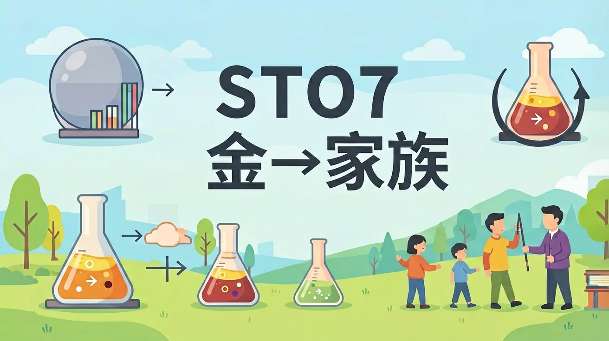

真实情境
实验室钠块保存事故处理
化学实验室管理员发现存放金属钠的煤油液面下降，部分钠块表面出现白色薄膜。在转移剩余钠块时，不慎将绿豆大小的钠粒掉入水槽，立即发生剧烈反应并伴随爆鸣声。
已有经验
学生知道金属钠需隔绝空气保存，能与水剧烈反应
真正卡点
不理解钠表面氧化物薄膜的组成及反应剧烈程度差异
本课任务
分析事故原因并设计安全操作方案
1. 为什么实验室将钠保存在煤油中？2. 观察钠与水反应时有哪些安全注意事项？3. 如何区分碳酸钠和碳酸氢钠粉末？
1. 写出钠在空气中最终产物的形成方程式 2. 设计实验证明氢氧化钠溶液呈碱性 3. 比较锂、钠、钾与水反应的剧烈程度差异
误区：认为钠燃烧生成白色氧化钠。错因：忽略高温下会生成过氧化钠。诊断：通过对比常温氧化与燃烧实验现象差异，结合氧气浓度对产物的影响进行纠偏。
迁移挑战：设计一个家庭实验方案，利用厨房材料证明食盐中含有钠元素（不可用明火），并分析其科学原理。
先独立作答，再点选项查看对错与错因。
实验室金属钠表面白色薄膜的主要成分是
绿豆大小钠粒比大块钠反应更剧烈的原因是
处理实验室钠残留物应选用
钠在空气中燃烧的黄色火焰是由于____跃迁
答案：电子
钠原子电子受热激发后返回基态释放特定波长光
实验室保存钠常浸在____中隔绝空气
答案：煤油
煤油不与钠反应且密度合适
下列碱金属性质递变正确的是
设计实验比较钠在水、乙醇、乙二醇中的反应现象
❓ 为啥钠不能用手直接拿？会爆炸吗？
❓ 钠扔水里为啥会'跳舞'还冒烟？
❓ 钠和钾都是碱金属，谁更'暴躁'？
学完这一课，这些问题你都能自信地回答。
✅ 应观察黄色火焰中的紫色钠光谱
💡 忽略焰色反应的本質是原子光谱
✅ 煤油隔绝空气和水，实际会微量反应
💡 绝对化理解惰性环境
口诀：银白轻软易氧化，遇水跳舞又爆炸
类比：钠像社恐的土豪，见人就撒电子（钱）
And：学生知道钠是金属
But：不理解为何要煤油保存
Therefore：揭示钠与氧/水的剧烈反应本质
钠原子最外层只有1个电子，极易失去电子显+1价。例如切割黄豆大小的钠（约0.1g），暴露在空气中会迅速变暗（生成氧化钠），放入水中剧烈反应产生氢气并熔化成银珠（反应放热使熔点97.8℃的钠熔化），实验测得每克钠可产生约500mL氢气。
🌍 消防员用干燥沙土扑灭钠火灾，因水会加剧燃烧；膨化食品包装中的脱氧剂含铁粉而非钠，因钠太活泼。
实验室钠块表面灰色物质是什么？
And：已观察钠的剧烈反应
But：不知同族元素规律
Therefore：建立‘结构决定性质’认知模型
碱金属最外层电子数均为1，随原子序数增加（如钠11→钾19），原子半径增大，最外层电子更易失去。例如钾与水的反应比钠更剧烈，会产生紫色火焰（电子跃迁释放特定波长光），铷甚至遇空气就自燃。但它们的氧化物（如Na₂O）都能与水生成强碱（NaOH）。
🌍 心脏病人需控制血钾浓度，钾过量会导致肌肉过度兴奋；烟花中加入锂/钠/钾化合物可产生红/黄/紫火焰。
下列碱金属性质递变正确的是？
